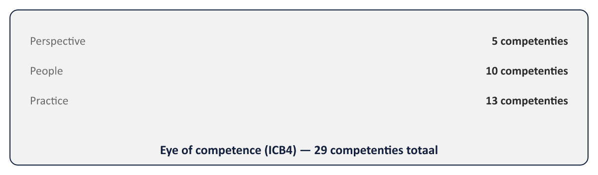
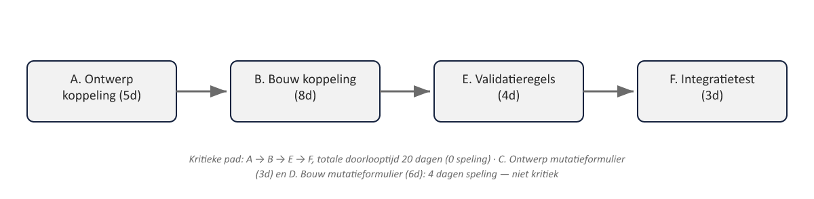

Sheet 1Titel
Project- en Programmamanagement
Niveau 1 · Deel 9: IPMA-D — wat PRINCE2 niet dekt
Sheet 2Methode vs. competentiebaseline
PRINCE2: voorgeschreven manier van werken
IPMA/ICB4: wat een professional persoonlijk moet kunnen
Sheet 3Het eye of competence

Perspective (5) · People (10) · Practice (13)
Sheet 4IPMA-D: het instapniveau
Kennisgericht examen: ± 50% meerkeuze, ± 50% open/rekenvragen
Sheet 5Wat dit deel toevoegt
- Gedrag en leiderschap
- Stakeholderanalyse
- Netwerkplanning en kritieke pad
- Earned Value Analysis
- Financiële basiskennis
Sheet 6Tuckman: groepsdynamica
Forming → Storming → Norming → Performing → (Adjourning)

Storming is normaal, geen mislukking
Sheet 7Situationeel leiderschap
Sturen → Coachen → Steunen → Delegeren
Afgestemd op bekwaamheid en betrokkenheid per taak, niet één vaste stijl
Sheet 8Onderhandelen en conflict
Conflictstijlen: forceren, vermijden, aanpassen, compromis, samenwerken
Positie vs. belang
Sheet 9Macht/belang-matrix
| Hoog belang | Laag belang | |
|---|---|---|
| Hoge macht | Nauw betrekken, actief managen | Tevreden houden, niet overvragen |
| Lage macht | Geïnformeerd houden, serieus nemen | Minimale inspanning, monitoren |
Hoge macht/hoog belang: nauw betrekken
Hoge macht/laag belang: tevreden houden
Lage macht/hoog belang: geïnformeerd houden
Lage macht/laag belang: minimale inspanning
Sheet 10Netwerkplanning: opzet
Activiteiten, doorlooptijd, voorgangers
Voorwaartse doorrekening: vroegst mogelijke start/einde
Achterwaartse doorrekening: laatst toelaatbare start/einde
Sheet 11Speling en het kritieke pad
Speling = laatst toelaatbaar − vroegst mogelijk
Kritieke pad = activiteiten met 0 speling → bepaalt de einddatum

Sheet 12Earned Value Analysis: drie kerngetallen
PV — begrote waarde van gepland werk
EV — begrote waarde van voltooid werk
AC — werkelijke kosten
Sheet 13EVA: afwijkingen en indices
SV = EV − PV (schema)
CV = EV − AC (kosten)
SPI = EV ÷ PV
CPI = EV ÷ AC
Sheet 14EVA: rekenvoorbeeld
PV €40.000 · EV €32.000 · AC €38.000
SV −8.000 · CV −6.000 · SPI 0,80 · CPI ≈ 0,84

Sheet 15Financiële basiskennis
Balans vs. winst-en-verliesrekening
Onderbouwing van de investeringsanalyse (deel 3)
Sheet 16Toegepast op Meridiaan
Stakeholderanalyse, netwerkplanning en EVA voor de herstart van WGP 2.0
Sheet 17Vooruitblik
Deel 10: examentraining + de PID-capstone — het laatste deel van niveau 1